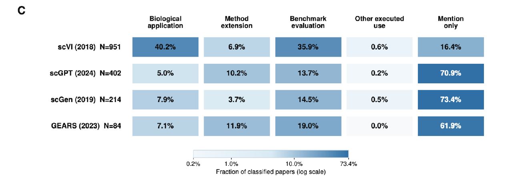

While writing a review of AI in single-cell biology, we spent time with many thoughtful and ambitious methods. Their citation counts reflected considerable interest.
Yet in the biological analyses we encountered, some of these models seemed to appear much less often.
We wondered whether a closer look at the literature would support that impression.
The workflow
So weLLMs read the citing papers.
Large language models make it practical to review a substantial body of literature. We built BioCiteTrace to ask how each paper uses a method, and to keep the evidence behind the answer.
Follow the citations, link versions of the same study, and prepare the available full text.
Read for use
Two LLM reviewers work independently: was the method applied, developed, evaluated, used another way, or mentioned?
Resolve differences
Check the supporting passages. Bring in a third blind review when needed, and keep unresolved cases visible.
Check with people
Two human reviewers assess a sample without seeing the machine answers, then agree on reference labels.
Thanks to Tibo for the resets that helped us run the LLM review pipeline across all four methods.
The first comparison
The pattern depends on the method.
Among papers with resolved classifications, biological application was much more common for scVI. For scGPT, scGen and GEARS, mention only was the most common category.

Primary citation-use categories among classified papers. Figure 2C, September 2026 draft.
The comparison is limited to resolved classifications. Missing evidence remains unresolved, and agreement with human reviewers varies by category.
Sampled human reviews are complete for scVI and scGPT. Two blinded reviewers assessed 50 studies per method and agreed on reference labels. The scores below cover studies with resolved machine classifications: 39 for scVI and 40 for scGPT.
Precision asks how often an assigned label was right. Recall asks how many of the human-labeled cases the LLMs found.
scVI
Category
Precision
Recall
Macro average
79.3%
77.5%
Biological application
88.9%
80.0%
Method extension
50.0%
50.0%
Benchmark evaluation
88.9%
80.0%
Mention only
89.5%
100.0%
scGPT
Category
Precision
Recall
Macro average
69.4%
71.4%
Biological application
44.4%
100.0%
Method extension
33.3%
40.0%
Benchmark evaluation
100.0%
45.5%
Mention only
100.0%
100.0%
These scores evaluate each study’s primary citation-use category. Agreement varies by category; the biological-application labels for scGPT need particular care.
{kind=link}